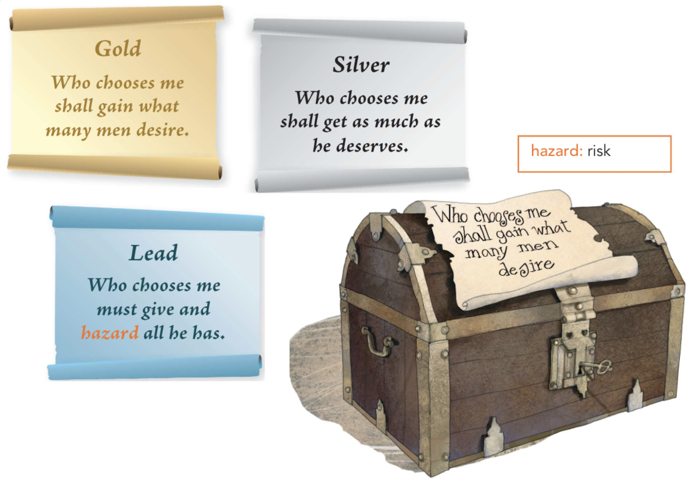
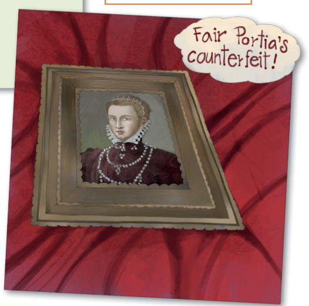

A riddle is a type of word puzzle. Riddles are like clues — they require the listener to think carefully and work out what is being described.
"If you cut me, you will cry. What am I?"
The answer is 'an onion'. In pairs, explain this answer. Can you think of any riddles of your own?
The part of this play by William Shakespeare that you are going to read features Portia, a rich single woman, and three men who want to marry her. Before Portia's father died, he made a rule that any man who wanted to marry Portia must be tested. In the test, each suitor (admirer) must choose one of three caskets (small boxes) that are made of gold, silver or lead.
If the man makes the correct choice, he will marry Portia. Each casket contains a small roll of paper called a scroll. The correct casket also contains a picture of Portia. On the outside of each casket, there are riddles to help Portia's admirers choose:
"Who chooses me shall gain what many men desire."
"Who chooses me shall get as much as he deserves."
"Who chooses me must give and hazard all he has."

MOROCCO But here an angel in a golden bed
Lies all within. Deliver me the key.
He unlocks the golden casket
There is a written scroll! I'll read the writing.
Reads
All that glitters is not gold;
Often have you heard that told.
ARAGON ... Well, but to my choice:
'Who chooses me shall get as much as he deserves.'
I will assume desert. Give me a key for this,
And instantly unlock my fortunes here.
He opens the silver casket
What's here? the portrait of a blinking idiot.
Reads
There be fools alive, I wis,
Silver'd o'er; and so was this.
PORTIA I pray you, tarry: pause a day or two
Before you hazard; for, in choosing wrong,
I lose your company.
BASSANIO Let me choose
For as I am, I live upon the rack.
"What find I here?"
(Opening the leaden casket)
"Fair Portia’s counterfeit!
Here’s the scroll."
(Reads)
"You that choose not by the view,
Chance as fair and choose as true!"
Read all three extracts, you should:

Each of the three suitors has a different attitude to the test. The Prince of Aragon thinks he deserves Portia – he says I will assume desert. The picture he sees and the words in the scroll suggest he is a fool.
What attitudes do the Prince of Morocco and Bassanio have towards the test? What lesson does the scroll teach them? Copy and complete the table below.
| Character | Attitude to the test | Moral lesson |
|---|---|---|
| Morocco | He thinks things that are worth the most money are the best. He chooses gold in the hope of improving his fortune. | The scroll tells him: All that glitters is not gold. This means ... |
| Bassanio | He feels nervous that he might make the wrong choice. | The scroll tells him: You that choose not by the view, / Chance as fair and choose as true! This means ... |
Here are some views of this scene. In pairs, discuss the views and find some evidence from the extract to support them.
The Reduced Shakespeare Company is a group of actors who perform short, modern versions of Shakespeare’s plays. In groups of four, write your own shorter, modern version of the scene from The Merchant of Venice (Extracts 1–3). Start by:
Use the structure of drama scripts, including stage directions. Reduce your version to no more than 15 lines. You could start with:
MOROCCO: Give me the key!
Rehearse and then perform your script. Think about how you can use movement, gesture and your voice to bring your scene to life. Use the stage directions as a starting point, but vary your volume and tone. Remember to think about where you could use pauses.
One of the main challenges of interpreting older texts is understanding the language. This is a particularly important skill when using quotations to support any points you make.
Match the lines on the left from The Merchant of Venice with their modern English translation on the right.
Note: Type the correct letter (A, B, C, or D) into the boxes below!
Read this extract, then answer the questions.
PORTIA
I pray you, tarry: pause a day or two
Before you hazard; for, in choosing wrong,
I lose your company.
BASSANIO
Let me choose
For as I am, I live upon the rack.
What find I here?
Opening the leaden casket
Fair Portia's counterfeit!
Here's the scroll.
Reads
You that choose not by the view,
Chance as fair and choose as true!
a Which line best supports the point that Bassanio feels very anxious about making his choice?
b Which line best supports the point that Bassanio is delighted with his choice?
c Which line best supports the point that Portia is keen for Bassanio to delay his choice?
Writers often explore similar ideas in their stories. In pairs, think of stories that focus on the same theme.
What are the differences in the way writers explore these themes?
In this poem by Robert Frost, the narrator describes a decision he makes while walking through a wood.
Two roads diverged in a yellow wood,
And sorry I could not travel both
And be one traveler, long I stood
And looked down one as far as I could
To where it bent in the undergrowth;
Then took the other, as just as fair,
And having perhaps the better claim,
Because it was grassy and wanted wear;
Though as for that the passing there
Had worn them really about the same,
And both that morning equally lay
In leaves no step had trodden black.
Oh, I kept the first for another day!
Yet knowing how way leads on to way,
I doubted if I should ever come back.
I shall be telling this with a sigh
Somewhere ages and ages hence:
Two roads diverged in a wood, and I—
I took the one less traveled by,
And that has made all the difference.
Note: This text uses American spellings.
Using your knowledge of word families and the context of the poem, write your own glossary to explain the underlined words. Use a dictionary to check you have understood the words correctly.
Many readers interpret 'The Road Not Taken' as a poem about the choices that humans make during the course of their life. The poem can be read as an extended metaphor for the important decisions we make.
In pairs, discuss what the following lines suggest about the feelings associated with important choices.
long I stood
And looked down one as far as I could
knowing how way leads on to way,
I doubted if I should ever come back.
I took the one less traveled by,
And that has made all the difference.
Writers often use literal choices to represent important moments in life. Read this short story about a visit to a swimming pool which presents the idea of growing up.
Oliver had been here so many times. As a young boy, he'd stood in the water and looked up, totally in awe at the men diving from the board. As they hurtled down aggressively towards the water, they seemed like eagles, diving with their eyes rigidly fixed and their bodies poised. But today, almost without thinking about it, Oliver found himself steadily climbing the steps up to the diving board. His father was behind him. As he stood on the board, he looked back hesitantly. 'You can come back if you want,' said his father. Oliver paused. He wanted to, but some unknown force made him walk to the edge and dive. There was no going back.
Adverbs show how a verb action is being done. They can also modify an adjective to give more detail about the manner and extent of an action. Notice how the underlined adverbs in these sentences add detail:
Adverbs of manner tell you about the way something is done – for example, 'quickly', 'horribly', 'fast', 'thoughtfully', 'incorrectly'.
Adverbs of degree tell you the extent to which something has happened – for example, 'completely', 'quite', 'very', 'totally', 'almost'.
Highlight the adverb in these sentences. Then next to the sentence, write whether it is an adverb of manner (M) or degree (D).
✨Type the adverb you found in the first box, and 'M' or 'D' in the second box!
Rewrite this paragraph, inserting adverbs to add descriptive detail to the sentences.